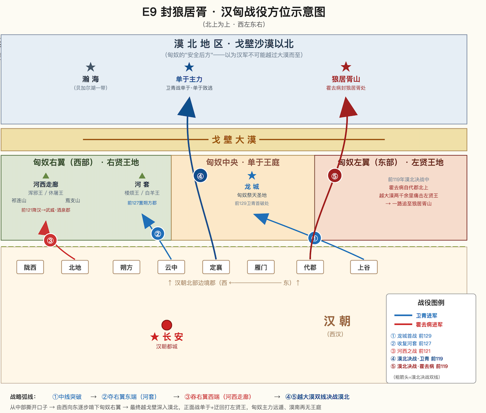

《上下五千年》· E9 封狼居胥 · 分集资料
一、教学目标
知识目标 | 剧情体现 | 主要环节 |
了解卫青、霍去病北击匈奴的故事，包括背景、经过和结果 | 背景： 汉武帝时国力强盛，武帝决心改变汉朝受制于匈奴的局面，军事上主动出击匈奴 经过： 龙城首战（重点）： 公元前129年，武帝派四路军出击匈奴，其余三路皆无功而返，唯有卫青率军长驱直入，直捣匈奴祭天圣地龙城 这是西汉立国以来对匈奴的首次胜利，打破了匈奴铁骑不可战胜的神话 收复河套： 公元前127年，卫青率军从云中打到陇西，大破匈奴，收复了河套地区 汉朝在此修筑朔方城，加固边防，从此匈奴铁骑无法再从河套南下直接威胁长安 河西之战： 公元前121年，霍去病两次出击河西，越过焉支山、打到祁连山，缴获了匈奴祭天的金人 匈奴浑邪王降汉，西汉设武威、酒泉两郡 漠北决战（重点）： 公元前119年，卫青、霍去病分两路跨越大漠，出击匈奴 卫青正面迎战匈奴单于主力，迫使单于突围西逃 霍去病长驱两千余里追击左贤王部，一路追到狼居胥山，在山顶筑坛祭天，又到姑衍山祭地，登临瀚海而还 结果： 匈奴主力遭众创，远遁北方，漠南再无匈奴王庭，河西走廊完全纳入西汉版图 | 正片 |
认识2位历史人物：了解卫青、霍去病的基本信息和主要事迹 | 卫青、霍去病的姓名、身份、生卒年、籍贯、朝代 | 人物卡 |
卫青、霍去病的主要事迹： 卫青： 龙城首战直捣匈奴祭天圣地龙城，打破匈奴不可战胜神话；收复河套地区；漠北决战中迎战单于主力，迫使单于北逃 奴仆出身，娶平阳公主（拓展） 霍去病： 18岁随舅舅卫青出征，率八百骑奔袭匈奴营地，封冠军侯；河西之战缴获休屠王祭天金人；漠北决战长驱两千余里痛击左贤王部，在狼居胥山祭天、姑衍山祭地 "匈奴未灭，无以家为也"（拓展） 二十四岁早逝，墓形象祁连山，陪葬茂陵（拓展） | ||
积累1个历史文化典故：了解"封狼居胥"典故的含义 | 典故卡 | |
情感目标 | 剧情中可落地的地方 | 主要环节 |
感受西汉王朝北击匈奴、开疆拓土的磅礴气势，增强民族自豪感 | 【漠北决战】中霍去病率军越过大漠、长驱两千余里突入漠北，最终在狼居胥山顶筑坛祭天、姑衍山祭地、登临瀚海的高光场景 | 正片 |
感受卫青、霍去病勇武进取的英雄精神 | 奴仆出身的卫青在其余三路皆无功而返时，独率万骑直捣匈奴祭天圣地龙城 漠北决战中长驱两千余里，封狼居胥 | 正片 |
二、故事梗概
为解决匈奴的威胁，汉武帝除了在外交上派张骞出使西域、联络西域诸国共同对抗匈奴；在军事上，也改"被动防御"为"主动出击"。
当时，匈奴的活动范围横跨大漠南北。以大漠（阴山、戈壁一带）为界，靠南的漠南地区（今内蒙古中部、河北省北部以及蒙古国戈壁以南的地区）与西汉的雁门、云中等地相邻，匈奴骑兵常从这里南下侵扰汉朝边境；大漠以北的漠北（今蒙古国北部、西伯利亚地区），则是匈奴更深处的草原腹地，也是匈奴退守和聚集主力的地方。从汉朝边郡到漠南、漠北的广阔区域，也就成了西汉与匈奴长期交锋的主要战场。
汉朝对匈奴的主动出击，从卫青开始。
卫青出身卑微，少年时是平阳侯家的一名奴仆。后来他的姐姐卫子夫得宠于汉武帝，后被立为皇后，卫青因此得以入宫为官；又凭借出众的骑射本领和军事才能，逐渐获得武帝的赏识。
公元前129年，汉武帝派出四路大军，主动出击匈奴——卫青从上谷出发，将领公孙贺、公孙敖分别从云中和代郡出发，老将李广从雁门出发，每路领一万骑兵，分头出击。结果公孙贺一路无功而返，公孙敖损兵七千狼狈撤回，老将李广兵败被俘，只身骑马逃回汉境。四路之中，三路都没能取胜。唯独卫青率兵长驱直入，一直打到匈奴祭天的圣地龙城，斩首七百，得胜而归。这是西汉立国以来汉军对匈奴的首次胜利，打破了"匈奴铁骑不可战胜"的神话。
公元前128年，匈奴入侵雁门，杀掠千余人。第二年，武帝派卫青率军从云中出发，一路向西打到陇西，在黄河南岸大破匈奴楼烦王、白羊王，斩获数千人，缴获牛羊百余万头，并成功收复了被匈奴侵占的河套地区。汉朝随即在河套地区修筑朔方城，又重新加固了边防要塞——黄河作天然屏障，长城要塞沿河而立，河、墙一体，牢牢挡在匈奴南下之路上。从此，匈奴铁骑无法再从河套南下直接威胁汉朝的都城长安。
此后几年，卫青多次率军北上征伐，接连取得胜利，被武帝拜为大将军。他曾深夜围困匈奴右贤王、几次出定襄数百里追击匈奴，前后斩获三万余人。
将汉朝对匈奴的攻势推向更高峰的，是霍去病。霍去病是卫青的外甥。他少年时就善于骑射，受到汉武帝的喜爱，让他进宫做天子侍中（皇帝身边的侍从官）。公元前123年，18岁的霍去病随卫青出征匈奴，他率八百轻骑奔袭匈奴营地，斩杀、生擒匈奴贵族、高官，展现出非凡的军事才能。公元前121年，汉武帝任命霍去病为骠骑将军，率一万骑兵从陇西出发攻打匈奴。霍去病越过焉支山一千多里，转战六天，连破匈奴五个部族，斩杀、生擒多名匈奴王室和贵族，斩首八千多。此战还缴获了匈奴休屠王用来祭天的金人——祭天金人是匈奴最神圣的礼器、是匈奴与上天沟通的凭证，被汉军夺走，对匈奴而言是莫大的精神打击。后来，匈奴的浑邪王率部众投降汉朝，汉朝随即在他们原来控制的河西地区设置武威、酒泉两郡，河西走廊东部到中部一带由此纳入汉朝的控制之下。
在汉军的打击下，匈奴连连战败，损失惨重，漠南、河西的活动空间被不断压缩，被迫将主力退回到大漠以北的漠北地区。但汉朝对匈奴的攻势并没有就此停止，而是继续北上。公元前119年，汉匈迎来漠北决战。
当时，朝廷调发十万骑兵，命卫青、霍去病各率一半军队分两路越过大漠，出击匈奴：大将军卫青从定襄郡出发，迎战匈奴单于主力；骠骑将军霍去病从代郡出发，长驱奔袭匈奴左贤王部。
卫青这一路进沙漠后遇上单于率领的精锐主力，两军交战一整天。傍晚时分刮起大风，卫青趁势下令从左右两翼包抄单于所在的大本营，单于独自带着几百骑兵冲破汉军包围圈，向西北方向逃走。卫青率军追击，斩获匈奴一万九千多人，一直打到匈奴的漠北据点赵信城才回师。
霍去病这一路则长驱两千余里，越过大漠，正面遇上匈奴左贤王的主力。霍去病大破左贤王军，斩获七万余人，左贤王和他手下的将领突围逃走。汉军一路追击，直至大漠深处的狼居胥山一带。霍去病登上狼居胥山，在山顶筑坛祭天，这就是后世传颂的“封狼居胥”。后来，霍去病又到南面的姑衍山筑坛祭地——他用祭天祭地这种汉朝的礼仪向天地告捷，象征汉军已经打到匈奴腹地，取得了前所未有的军功。最后，霍去病率军继续北进，登上瀚海（常见说法是今贝加尔湖一带，也有指代大漠等不同说法），才下令班师。汉家武功在这一刻达到了顶点。
漠北之战后，匈奴元气大伤，远遁北方，漠南再没有匈奴的王庭。西汉乘势在河西走廊地区设立了张掖、敦煌两郡，加上此前公元前121年设的武威、酒泉两郡，这就是著名的"河西四郡"，整条河西走廊完全纳入西汉版图。
河西四郡设立后，汉朝在四郡境内驻军屯田、修筑长城亭障。汉朝使者和商旅经过时，面对的匈奴威胁大大减弱，张骞当年艰辛打通的西域通道，也由此有了更加稳定的保障。至此，武帝时代的大一统，不仅在政治、思想、经济上，也在外交与军事两个维度上稳稳立住——汉家天下，由此走向鼎盛。
故事重点：
1.重点演绎"龙城首战"和"封狼居胥"两个高光场景——前者要把"四路出击三路败、独卫青破龙城"的反差演透，让孩子感受打破匈奴不可战胜神话的历史性意义；后者要给足霍去病登顶狼居胥山筑坛祭天、登临瀚海的氛围烘托，让孩子感受汉家武功登顶的磅礴气势
2.卫青收复河套及几次北征可由旁白配画面带过；霍去病河西之战重点呈现“缴获祭天金人”对匈奴礼制象征的冲击

原文地名 | 具体位置 |
上谷 | 上谷郡，约今河北张家口怀来一带 |
云中 | 云中郡，约今内蒙古托克托、呼和浩特一带 |
代郡 | 代郡，约今河北蔚县一带 |
雁门 | 雁门郡，约今山西右玉、代县以北一带 |
龙城 | 匈奴祭天圣地，常见说法在今蒙古国中部一带，具体位置仍有争议 |
黄河南岸 / 河南地 | 匈奴所称“河南地”，大致指黄河河套以南地区 |
河套 | 黄河“几”字弯一带 |
陇西 | 陇西郡，治所在今甘肃临洮一带 |
北地 | 北地郡，约今甘肃庆阳、宁夏南部一带 |
焉支山 | 今甘肃张掖山丹县东南一带 |
祁连山 | 今甘肃、青海交界一带；本处指河西走廊南缘的祁连山 |
河西走廊 | 今甘肃西北部，武威、张掖、酒泉、敦煌一线 |
武威 | 今甘肃武威一带 |
酒泉 | 今甘肃酒泉一带 |
张掖 | 今甘肃张掖一带 |
敦煌 | 今甘肃敦煌一带 |
定襄郡 | 约今内蒙古和林格尔、清水河一带 |
漠北 / 大漠以北 | 大漠以北，约今蒙古高原一带 |
赵信城 | 匈奴叛汉将领赵信所筑的北方据点 |
狼居胥山 | 常见说法在今蒙古国肯特山一带，具体地望仍有争议 |
姑衍山 | 约在蒙古高原北部，具体位置有争议 |
瀚海 / 翰海 | 文献作“翰海”；常见说法认为在今贝加尔湖一带，也有“大漠”等不同解释 |
朔方郡 / 朔方城 | 约今内蒙古鄂尔多斯杭锦旗北一带 |
令居县 / 令居城 | 今甘肃兰州永登县一带 |
三、背景信息（专家提供）
总体时代特点 | 汉武帝时期改变汉初对匈奴的和亲政策，以武力反击，其后十余年间，卫青、霍去病多次取得对匈奴作战的胜利，匈奴自此远遁漠北，漠南无王庭。汉朝完全控制了河西走廊， | ||
基础信息 | 时间 | 公元前129-119年 | |
季节 |
| ||
环境 | 戈壁、草原 | ||
人物信息 | 卫青 | 年龄 | 30-40岁 |
特殊外貌 |
| ||
性格标签 | 勇猛果敢、身先士卒、富有谋略 | ||
霍去病 | 年龄 | 20岁，青年形象 | |
特殊外貌 |
| ||
性格标签 | 果敢敏锐、体恤士卒、有勇有谋 | ||
四、参考资料
https://shimo.zhenguanyu.com/docs/AZlp79E45x07Ir47/ 《E9 封狼居胥-参考资料》